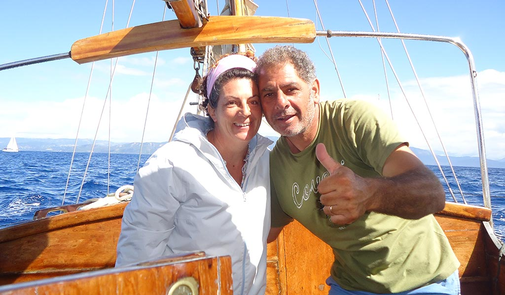

Trent’anni di passione, mare e accoglienza
Non è iniziato come un lavoro. È iniziato come un’abitudine: uscire in mare, leggere il vento, conoscere ogni angolo della costa di Castro come si conosce una casa.
Poi quella passione è diventata qualcosa di più grande. Prima una barca, poi un’altra, poi le persone che iniziavano a chiedere di essere accompagnate in quei luoghi che da riva non si vedono.
Così è nata Durlindana: non un servizio, ma un modo di vivere il mare e di farlo vivere agli altri.
Siamo Rocco e Cristiana, e da oltre 30 anni viviamo ogni giorno tra il porto, le barche e il mare di Castro. Non ci limitiamo a “portare in giro”: accompagniamo le persone dentro un paesaggio che conosciamo in ogni dettaglio.
Ogni grotta, ogni cala, ogni tratto di costa ha una storia che cambia con la luce del giorno e con il vento. E noi siamo lì per farvela vedere nel momento giusto.
C’è chi viene per curiosità, chi per una giornata diversa, chi per staccare da tutto. Ma tutti tornano con la stessa sensazione: quella di aver vissuto qualcosa di semplice, vero e difficile da dimenticare.
Per noi il lusso non è l’eccesso. È il silenzio del mare, l’acqua trasparente, una sosta in una cala senza nessun rumore intorno.
